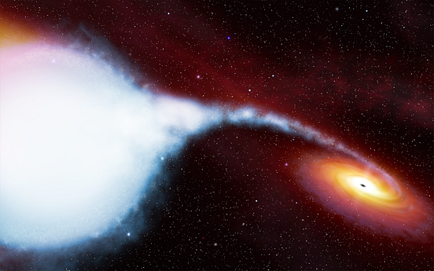

M33 X-7 är ett binär system som består av en blå stjärna som kretsar runt en svarthål. Stjärnan har en massa som är 70 gånger så stor som solen. Stjärnan tar 3,45 days att kretsa runt sin kompanjon. Den är så nära att den blir uppäten av det svarta hålet. Svarta hålet är ett stellaris svart hål. De bildas när en stjärna kollapsar på sig själv på grund av sin egen gravitationskraft.
